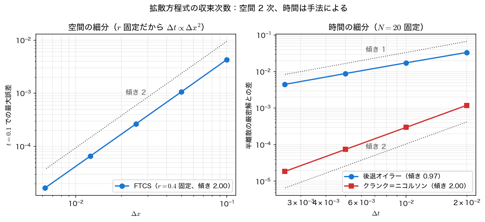
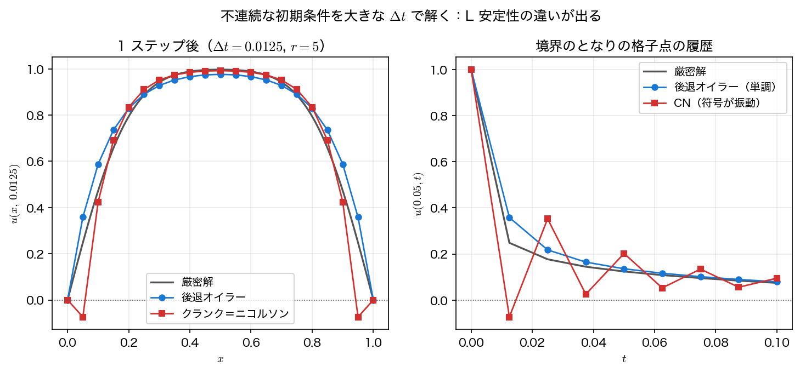

陰解法
FTCS の \(\Delta t\le\Delta x^2/2\alpha\) という制限は、格子を細かくするほど絶望的に厳しくなる。線の方法で見たとおり、半離散系は \(\Delta x\to0\) で必ず硬く（stiff）なるからである。第6回で学んだとおり、硬い問題に陽解法を使う限りこの縛りからは逃れられない。答えは同じく第5・6回にある——A 安定な陰的解法を使う。
本ページでは第5回の後退オイラー法と台形則を半離散系に当てはめる。台形則は偏微分方程式の文脈ではクランク＝ニコルソン法（Crank–Nicolson method）と呼ばれ、拡散方程式の標準的な解法になっている。毎ステップ現れる連立方程式は三重対角なので、第7回のトーマス法がそのまま使える。
後退オイラー法
第5回の後退オイラー法は、右辺を新しい時刻で評価する。半離散系に当てはめると
となる。未知の \(u^{n+1}\) が右辺にも入っているので、\(u_i^{n+1}\) について解くことはできない。左辺に未知数を集めると
という連立1次方程式になる。行列で書けば \((I-r T)\mathbf u^{n+1}=\mathbf u^n\)（\(T\) は \(\mathrm{tridiag}(1,-2,1)\)）で、係数行列は \(u^n\) によらず毎ステップ同じ三重対角行列である。ディリクレ境界 \(u_0=u_N=0\) は既知なので、\(i=1\) と \(i=N-1\) の式から落ちる（境界値が0でなければ右辺へ移項する。演習1を参照）。
各行の係数を並べると
である。\(r>0\) なら \(\lvert b_i\rvert = 1+2r > \lvert a_i\rvert+\lvert c_i\rvert = 2r\)、すなわち狭義対角優位なので、トーマス法はピボット選択なしで安定に動く。第7回で書いた thomas() を1行も変えずに再利用できる。
安定性はどうか。最短波長の成分 \(u_i^n=(-1)^iG^n\) を代入すると \(u_{i-1}^{n+1}+u_{i+1}^{n+1}=-2u_i^{n+1}\) だから
で、\(r>0\) ならつねに \(0<G<1\)。すなわち無条件安定（unconditionally stable）である。\(\Delta t\) をいくら大きくとっても発散しない。これは第6回の A 安定性——後退オイラー法の安定関数 \(R(z)=1/(1-z)\) が左半平面全体で \(\lvert R\rvert\le1\)——を、\(z=\lambda_k\Delta t\)（\(\lambda_k\) は半離散系の固有値、すべて負の実数）に適用した結果にほかならない。
クランク＝ニコルソン法
後退オイラー法は無条件安定だが、第5回のとおり時間について1次精度しかない。空間はせっかく2次精度なのに、時間が1次では釣り合わない。そこで第5回の台形則——右辺を新旧の時刻の平均で評価する——を使う。
これがクランク＝ニコルソン法である。時間の中点 \(t_{n+1/2}\) のまわりで中心差分をとった形になっているので、時間について2次精度 \(O(\Delta t^2)+O(\Delta x^2)\) になる。未知数を左辺に集めれば
で、やはり三重対角系である。後退オイラー法との違いは係数が半分になったことと、右辺に既知の時刻の中心差分が加わることだけで、実装の手間はほとんど変わらない。
最短波長の増幅係数は
で、\(r>0\) ならつねに \(\lvert G\rvert<1\)、これも無条件安定である。ただし \(r>1/2\) では \(G<0\) となり、\(r\to\infty\) で \(G\to-1\) に近づく。これが後で見る振動の正体である。3手法をまとめておく。
| 手法 | 更新式の形 | 精度 | 最短波長の増幅係数 \(G\) | 安定性 |
|---|---|---|---|---|
| 前進オイラー（FTCS） | 陽的 | \(O(\Delta t)+O(\Delta x^2)\) | \(1-4r\) | \(r\le1/2\) のときのみ |
| 後退オイラー | 三重対角系 | \(O(\Delta t)+O(\Delta x^2)\) | \(1/(1+4r)\) | 無条件・L 安定 |
| クランク＝ニコルソン | 三重対角系 | \(O(\Delta t^2)+O(\Delta x^2)\) | \((1-2r)/(1+2r)\) | 無条件・A 安定だが L 安定でない |
時間精度を分離して測る
3手法の時間精度を実験で確かめたい。しかし数値解を連続の厳密解 \(e^{-\pi^2t}\sin\pi x\) と比べると、空間離散化の誤差 \(O(\Delta x^2)\) が混ざってしまい、\(\Delta t\) を小さくしても誤差はそこで頭打ちになる。時間離散化の誤差だけを取り出すには、比較対象を半離散系の厳密解にすればよい。
例題1で述べたとおり、\(\sin\pi x_i\) は離散ラプラシアンの固有ベクトルなので、半離散系 \(\mathbf u'=A\mathbf u\) の解は閉形式で書ける。
\(N=20\) では \(\lambda_1=-9.849328\)（連続の \(-\pi^2=-9.869604\) と \(0.2\%\) ずれている。これが空間離散化の誤差である）。この解と数値解の差は純粋に時間離散化だけの誤差になる。
まず \(N=20\)、\(r=0.4\)（\(\Delta t=0.001\)）で \(t=0.1\) まで解き、3手法を並べる。
| 手法 | \(u(0.5,0.1)\) | 半離散の厳密解との差 | 連続の厳密解との差 |
|---|---|---|---|
| 前進オイラー（FTCS） | 0.37164533 | \(-1.819\times10^{-3}\) | \(-1.063\times10^{-3}\) |
| 後退オイラー | 0.37526835 | \(+1.804\times10^{-3}\) | \(+2.561\times10^{-3}\) |
| クランク＝ニコルソン | 0.37346137 | \(\mathbf{-2.974\times10^{-6}}\) | \(+7.535\times10^{-4}\) |
半離散の厳密解は \(0.37346434\)、連続の厳密解は \(0.37270784\) である。クランク＝ニコルソン法の時間誤差は他の2つより3桁小さい——これが時間2次精度の威力である。同時に、連続の厳密解との差はどの手法も \(10^{-3}\) 程度で頭打ちになっていることも読み取れる。ここでの誤差は空間離散化が支配しており、時間積分をどれだけ精密にしても、空間の \(O(\Delta x^2)\) より下には行けない。
前進オイラーと後退オイラーの誤差がほぼ同じ大きさで符号だけ逆（\(-1.819\times10^{-3}\) と \(+1.804\times10^{-3}\)）なのも偶然ではない。前者は減衰を過大に、後者は過小に見積もるためで、その平均をとる操作がまさにクランク＝ニコルソン法である。
次に空間を \(N=20\) に固定して \(\Delta t\) だけを半分にしていくと、次数の違いがはっきり出る。

実行結果の表では、\(\Delta t\) を半分にするたびに後退オイラー法の誤差比は \(1.925\to1.961\to1.980\) と \(2\) に、クランク＝ニコルソン法は \(4.013\to4.003\to4.001\) と \(4\) に収束している。それぞれ1次・2次の明確な証拠である。なお \(\Delta t=0.02\) は \(r=8\)、つまり FTCS の安定限界 \(r\le0.5\) を16倍も破っているが、どちらの陰解法も平然と解いている。
L 安定性：クランク＝ニコルソン法の振動
無条件安定で2次精度なら、クランク＝ニコルソン法が常に最良かというと、そうではない。\(\Delta t\) を大きくとったときの振る舞いに落とし穴がある。
例題2（一様に熱した棒の急冷）を \(r=5\)（\(\Delta t=0.0125\)）という大きな刻みで解いてみる。\(t=0\) で解が不連続なので、最短波長の成分が最初から大きな振幅で含まれている状況である。

負の温度は物理的にありえない。この現象の正体は第6回の L 安定性である。最短波長の増幅係数を \(r\to\infty\)（\(\Delta t\) を大きくする、あるいは \(\Delta x\) を小さくする）の極限で見ると
となる。物理的には、最短波長の成分は \(\lambda_{N-1}\approx-4\alpha/\Delta x^2\) という猛烈な速さで減衰し、1ステップの間にほぼ完全に消えるべきものである。後退オイラー法は \(G\to0\) なのでこれを正しく再現する（L 安定）。ところがクランク＝ニコルソン法は \(G\to-1\)、つまり振幅を保ったまま符号だけを反転させる——減衰すべき成分が、いつまでも符号を変えながら居座り続けるのである。これは第5回で台形則が硬い問題に見せた符号振動と、まったく同じ現象の PDE 版である。
実務上の使い分けは次のようになる。
- 解が滑らかで、\(\Delta t\) を適度にとる（\(r\) が \(1\) 程度まで）：クランク＝ニコルソン法。2次精度の恩恵が大きい。
- 初期条件や境界条件が不連続、または非常に大きな \(\Delta t\) を使いたい：後退オイラー法。精度は1次だが振動しない。
- 折衷案：最初の数ステップだけ後退オイラー法で不連続をならし、その後クランク＝ニコルソン法に切り替える（Rannacher 起動法として知られる）。
サンプルコード
トーマス法（第7回から流用）の上に、後退オイラー法とクランク＝ニコルソン法の1ステップ関数を書く。比較用に FTCS も置き、(1) 3手法の精度比較、(2) 時間刻みの細分、(3) 大きな \(\Delta t\) での L 安定性の違いを順に出力する。
#include <stdio.h>
#include <math.h>
/* 第9回 拡散方程式: 陰解法（後退オイラー・クランク＝ニコルソン）
毎ステップ三重対角系が現れるので、第7回のトーマス法をそのまま使う。
例題1: u_t = u_xx, u(x,0)=sin(pi x), 厳密解 exp(-pi^2 t) sin(pi x)
例題2: 一様に熱した棒 u(x,0)=1 の両端を急に 0 に冷やす。
大きな dt で CN が振動し後退オイラーが単調なことを見る。 */
static const double PI = 3.14159265358979323846;
static const double ALPHA = 1.0;
static double exact1(double x, double t) {
return exp(-ALPHA*PI*PI*t)*sin(PI*x);
}
/* トーマス法（第7回 有限差分法のサンプルコードから再利用）
a[i] x[i-1] + b[i] x[i] + c[i] x[i+1] = d[i], i=0..n-1 */
static void thomas(int n, const double a[n], const double b[n], const double c[n],
const double d[n], double x[n]) {
double cp[n], dp[n];
cp[0] = c[0]/b[0];
dp[0] = d[0]/b[0];
for (int i=1;i<n;i++){
double m = b[i] - a[i]*cp[i-1];
cp[i] = c[i]/m;
dp[i] = (d[i] - a[i]*dp[i-1])/m;
}
x[n-1] = dp[n-1];
for (int i=n-2;i>=0;i--) x[i] = dp[i] - cp[i]*x[i+1];
}
/* 前進オイラー（FTCS）1 ステップ: 比較用 */
static void ftcs_step(int N, double r, double u[N+1]) {
double un[N+1];
un[0] = 0.0; un[N] = 0.0;
for (int i=1;i<N;i++) un[i] = u[i] + r*(u[i-1] - 2.0*u[i] + u[i+1]);
for (int i=0;i<=N;i++) u[i] = un[i];
}
/* 後退オイラー 1 ステップ:
-r U_{i-1} + (1+2r) U_i - r U_{i+1} = u_i */
static void be_step(int N, double r, double u[N+1]) {
int m = N-1;
double a[m], b[m], c[m], d[m], y[m];
for (int i=0;i<m;i++){
a[i] = -r; b[i] = 1.0 + 2.0*r; c[i] = -r;
d[i] = u[i+1];
}
thomas(m, a, b, c, d, y);
for (int i=0;i<m;i++) u[i+1] = y[i];
u[0] = 0.0; u[N] = 0.0;
}
/* クランク＝ニコルソン 1 ステップ:
-(r/2)U_{i-1} + (1+r)U_i - (r/2)U_{i+1}
= u_i + (r/2)(u_{i-1} - 2u_i + u_{i+1}) */
static void cn_step(int N, double r, double u[N+1]) {
int m = N-1;
double a[m], b[m], c[m], d[m], y[m];
for (int i=0;i<m;i++){
a[i] = -0.5*r; b[i] = 1.0 + r; c[i] = -0.5*r;
d[i] = u[i+1] + 0.5*r*(u[i] - 2.0*u[i+1] + u[i+2]);
}
thomas(m, a, b, c, d, y);
for (int i=0;i<m;i++) u[i+1] = y[i];
u[0] = 0.0; u[N] = 0.0;
}
/* 例題2 の厳密解（奇数次のフーリエ級数） */
static double exact2(double x, double t) {
double s = 0.0;
for (int n=1;n<=401;n+=2)
s += (4.0/(n*PI))*exp(-ALPHA*(double)n*n*PI*PI*t)*sin(n*PI*x);
return s;
}
/* 例題2 の初期条件: 内点はすべて 1、両端は 0 */
static void init_uniform(int N, double u[N+1]) {
for (int i=0;i<=N;i++) u[i] = 1.0;
u[0] = 0.0; u[N] = 0.0;
}
int main(void) {
/* ---- (1) 3 手法の精度比較（例題1, N=20, r=0.4, t=0.1）---- */
int N = 20;
double dx = 1.0/N, r = 0.4, dt = r*dx*dx/ALPHA;
int nstep = (int)lround(0.1/dt);
/* 半離散系の厳密解: sin(pi x_i) は離散ラプラシアンの固有ベクトル */
double lam1 = -(4.0*ALPHA/(dx*dx))*pow(sin(PI*dx/2.0), 2.0);
double semi = exp(lam1*0.1)*sin(PI*0.5);
double cont = exact1(0.5, 0.1);
printf("=== 3 手法の比較（例題1, N=%d, r=%.1f, dt=%g, t=0.1 まで %d ステップ）===\n",
N, r, dt, nstep);
printf(" 半離散系の固有値 lambda_1^h = %.6f (連続の -pi^2 = %.6f)\n", lam1, -PI*PI);
printf(" 半離散の厳密解 u(0.5,0.1) = %.8f, 連続の厳密解 = %.8f\n\n", semi, cont);
printf(" 手法 u(0.5,0.1) 半離散との差 連続との差\n");
printf("---------------------------------------------------------------\n");
const char *names[3] = {"前進オイラー(FTCS)", "後退オイラー ", "CN "};
for (int mth=0;mth<3;mth++){
double u[N+1];
for (int i=0;i<=N;i++) u[i] = sin(PI*(i*dx));
for (int n=0;n<nstep;n++){
if (mth==0) ftcs_step(N, r, u);
else if (mth==1) be_step(N, r, u);
else cn_step(N, r, u);
}
printf(" %s %12.8f %+.3e %+.3e\n",
names[mth], u[N/2], u[N/2]-semi, u[N/2]-cont);
}
/* ---- (2) 時間刻みの細分（空間は N=20 に固定、半離散厳密解と比較）---- */
printf("\n=== 時間精度（N=20 固定, 半離散の厳密解と比較, t=0.1）===\n");
printf(" dt r 後退オイラー誤差 比 CN 誤差 比\n");
printf("---------------------------------------------------------------\n");
double dts[] = {0.02, 0.01, 0.005, 0.0025};
double pbe = 0.0, pcn = 0.0;
FILE *fo = fopen("implicit_order.dat", "w"); /* 作図用 */
if (fo == NULL) { perror("implicit_order.dat"); return 1; }
fprintf(fo, "# dt r err_backward err_cn\n");
for (int k=0;k<4;k++){
double dtk = dts[k], rk = ALPHA*dtk/(dx*dx);
int ns = (int)lround(0.1/dtk);
double ube[N+1], ucn[N+1];
for (int i=0;i<=N;i++){ ube[i] = sin(PI*(i*dx)); ucn[i] = ube[i]; }
for (int n=0;n<ns;n++){ be_step(N, rk, ube); cn_step(N, rk, ucn); }
double ebe = fabs(ube[N/2]-semi), ecn = fabs(ucn[N/2]-semi);
printf(" %7.4f %5.2f %.6e", dtk, rk, ebe);
if (k) printf(" %5.3f", pbe/ebe); else printf(" -- ");
printf(" %.6e", ecn);
if (k) printf(" %5.3f\n", pcn/ecn); else printf(" --\n");
fprintf(fo, "%.10e %.10e %.10e %.10e\n", dtk, rk, ebe, ecn);
pbe = ebe; pcn = ecn;
}
fclose(fo);
printf("\n(後退オイラーは 1 次なら比 2、CN は 2 次なら比 4)\n");
/* ---- (3) 不連続な初期条件を大きな時間刻みで（L 安定性の違い）---- */
double rbig = 5.0, dtb = rbig*dx*dx/ALPHA;
printf("\n=== 一様初期条件 u(x,0)=1 の急冷を大きな時間刻みで（N=20, r=%.1f, dt=%g）===\n",
rbig, dtb);
printf(" n t 手法 u(0.05) u(0.5) u の最小値 振動\n");
printf("--------------------------------------------------------------------------------\n");
double ub[N+1], uc[N+1];
init_uniform(N, ub); init_uniform(N, uc);
FILE *fv = fopen("cn_vs_be.dat", "w"); /* 作図用（n=0 の初期状態も入れる）*/
if (fv == NULL) { perror("cn_vs_be.dat"); return 1; }
fprintf(fv, "# n t x u_backward u_cn u_exact\n");
for (int i=0;i<=N;i++) /* t=0 の厳密値は初期条件そのもの（級数は使わない）*/
fprintf(fv, "%d %.10e %.10e %.10e %.10e %.10e\n", 0, 0.0, i*dx, ub[i], uc[i], ub[i]);
for (int n=1;n<=4;n++){
be_step(N, rbig, ub);
cn_step(N, rbig, uc);
double mnb=ub[1], mnc=uc[1];
for (int i=1;i<N;i++){
if (ub[i]<mnb) mnb=ub[i];
if (uc[i]<mnc) mnc=uc[i];
}
printf(" %d %6.4f 後退オイラー %10.6f %10.6f %10.6f %s\n",
n, n*dtb, ub[1], ub[N/2], mnb, (mnb < -1e-12 ? "あり" : "なし"));
printf(" %d %6.4f CN %10.6f %10.6f %10.6f %s\n",
n, n*dtb, uc[1], uc[N/2], mnc, (mnc < -1e-12 ? "あり" : "なし"));
printf(" %d %6.4f 厳密解 %10.6f %10.6f\n",
n, n*dtb, exact2(dx, n*dtb), exact2(0.5, n*dtb));
for (int i=0;i<=N;i++)
fprintf(fv, "%d %.10e %.10e %.10e %.10e %.10e\n",
n, n*dtb, i*dx, ub[i], uc[i], exact2(i*dx, n*dtb));
}
fclose(fv);
printf("\n(r=5 は前進オイラーの安定条件 r<=1/2 を大きく破るが、どちらの陰解法も発散はしない。\n");
printf(" 後退オイラーは L 安定なので単調に減衰し、CN は A 安定だが L 安定でないので\n");
printf(" 不連続の近くで符号の振動（負の温度）が現れる)\n");
return 0;
}
コンパイル・実行:
実行結果
=== 3 手法の比較（例題1, N=20, r=0.4, dt=0.001, t=0.1 まで 100 ステップ）===
半離散系の固有値 lambda_1^h = -9.849328 (連続の -pi^2 = -9.869604)
半離散の厳密解 u(0.5,0.1) = 0.37346434, 連続の厳密解 = 0.37270784
手法 u(0.5,0.1) 半離散との差 連続との差
---------------------------------------------------------------
前進オイラー(FTCS) 0.37164533 -1.819e-03 -1.063e-03
後退オイラー 0.37526835 +1.804e-03 +2.561e-03
CN 0.37346137 -2.974e-06 +7.535e-04
=== 時間精度（N=20 固定, 半離散の厳密解と比較, t=0.1）===
dt r 後退オイラー誤差 比 CN 誤差 比
---------------------------------------------------------------
0.0200 8.00 3.349746e-02 -- 1.194511e-03 --
0.0100 4.00 1.739993e-02 1.925 2.976782e-04 4.013
0.0050 2.00 8.874375e-03 1.961 7.436052e-05 4.003
0.0025 1.00 4.482378e-03 1.980 1.858645e-05 4.001
(後退オイラーは 1 次なら比 2、CN は 2 次なら比 4)
=== 一様初期条件 u(x,0)=1 の急冷を大きな時間刻みで（N=20, r=5.0, dt=0.0125）===
n t 手法 u(0.05) u(0.5) u の最小値 振動
--------------------------------------------------------------------------------
1 0.0125 後退オイラー 0.358129 0.976309 0.358129 なし
1 0.0125 CN -0.073361 0.992072 -0.073361 あり
1 0.0125 厳密解 0.248170 0.996869
2 0.0250 後退オイラー 0.217595 0.924627 0.217595 なし
2 0.0250 CN 0.352631 0.952192 0.305003 なし
2 0.0250 厳密解 0.176918 0.949305
3 0.0375 後退オイラー 0.164576 0.854748 0.164576 なし
3 0.0375 CN 0.025121 0.869659 0.025121 なし
3 0.0375 厳密解 0.144471 0.864222
4 0.0500 後退オイラー 0.135656 0.777675 0.135656 なし
4 0.0500 CN 0.202015 0.772308 0.202015 なし
4 0.0500 厳密解 0.123869 0.772312
(r=5 は前進オイラーの安定条件 r<=1/2 を大きく破るが、どちらの陰解法も発散はしない。
後退オイラーは L 安定なので単調に減衰し、CN は A 安定だが L 安定でないので
不連続の近くで符号の振動（負の温度）が現れる)
(3) の \(u(0.05)\) の列を縦に読むと、後退オイラー法は \(0.358\to0.218\to0.165\to0.136\) と単調に減衰するのに対し、クランク＝ニコルソン法は \(-0.073\to0.353\to0.025\to0.202\) と厳密解のまわりを跳ね回っている。振幅は少しずつ小さくなる（発散はしない）が、収まるまでに何ステップもかかる。\(\Delta t\) を小さくすれば消える現象だが、そもそも大きな \(\Delta t\) を使いたくて陰解法を選んだのだから、これは実用上の制約になる。
可視化
implicit.c は implicit_order.dat（1列目 \(\Delta t\)、2列目 \(r\)、3列目 後退オイラーの誤差、4列目 CN の誤差）と cn_vs_be.dat（1列目 ステップ番号 \(n\)、以下 \(t,\ x\)、後退オイラー、CN、厳密解）を書き出す。後者は毎ステップの断面がまるごと入っているので、空間分布と1点の時間履歴の両方が同じファイルから描ける。
import numpy as np
import matplotlib.pyplot as plt
dt, r, err_be, err_cn = np.loadtxt("implicit_order.dat", unpack=True)
d = np.loadtxt("cn_vs_be.dat") # 列: n, t, x, u_be, u_cn, u_exact
# --- 図1: 時間刻みの細分（半離散の厳密解との差）---
fig, ax = plt.subplots(figsize=(6.5, 4.5))
for err, name, mk in ((err_be, "backward Euler", "o"), (err_cn, "Crank-Nicolson", "s")):
slope = np.polyfit(np.log(dt), np.log(err), 1)[0]
ax.loglog(dt, err, mk + "-", ms=5, label=f"{name} (slope {slope:.2f})")
ax.set_xlabel("$\\Delta t$")
ax.set_ylabel("error vs. semi-discrete exact solution")
ax.set_title("time accuracy ($N = 20$ fixed)")
ax.grid(alpha=0.3, which="both")
ax.legend()
fig.tight_layout()
fig.savefig("implicit_order.png", dpi=150)
# --- 図2: 大きな dt での L 安定性の違い ---
first = d[d[:, 0] == 1] # 1 ステップ後の断面
edge = d[np.isclose(d[:, 2], 0.05)] # 境界のとなり x=0.05 の履歴
fig, (ax1, ax2) = plt.subplots(1, 2, figsize=(11, 4.2))
ax1.plot(first[:, 2], first[:, 5], "k--", lw=1.2, label="exact")
ax1.plot(first[:, 2], first[:, 3], "o-", ms=5, label="backward Euler")
ax1.plot(first[:, 2], first[:, 4], "s-", ms=5, label="Crank-Nicolson")
ax1.axhline(0.0, color="gray", lw=0.8, ls=":") # 負の温度が見えるように
ax1.set_xlabel("$x$")
ax1.set_ylabel("$u$ after one step")
ax1.set_title("$r = 5$: one step from a jump")
ax1.grid(alpha=0.3)
ax1.legend(fontsize=9)
ax2.plot(edge[:, 1], edge[:, 5], "k--", lw=1.2, label="exact")
ax2.plot(edge[:, 1], edge[:, 3], "o-", ms=5, label="backward Euler")
ax2.plot(edge[:, 1], edge[:, 4], "s-", ms=5, label="Crank-Nicolson")
ax2.axhline(0.0, color="gray", lw=0.8, ls=":")
ax2.set_xlabel("$t$")
ax2.set_ylabel("$u(0.05,\\,t)$")
ax2.set_title("history next to the boundary")
ax2.grid(alpha=0.3)
ax2.legend(fontsize=9)
fig.tight_layout()
fig.savefig("cn_vs_be.png", dpi=150)
plt.show()
実行:
1つ目の図では、傾きを最小二乗で測ると後退オイラーが約 \(1\)、CN が約 \(2\) になる。2つ目の左パネルでは CN の曲線だけが \(u=0\) の破線を割り込み（負の温度）、右パネルではその点が符号を変えながら振動し続ける。無条件安定は「発散しない」ことしか保証しない——解の質は L 安定性が決める。
計算コストの比較
陰解法は毎ステップ連立方程式を解くぶん高価に見えるが、三重対角ならその差はわずかである。
| 手法 | 1ステップの演算量 | \(t=0.1\) まで（\(N=320\)） | 総演算量の目安 |
|---|---|---|---|
| FTCS | \(\approx 3N\) | 20480 ステップ（\(r\le1/2\) の制限） | \(2.0\times10^7\) |
| 後退オイラー・CN | \(\approx 8N\)（トーマス法） | 100 ステップ（\(r\approx100\) でも可） | \(2.6\times10^5\) |
トーマス法は1ステップあたり FTCS の3倍程度しかかからない。一方で許される \(\Delta t\) は2桁以上大きくできるので、細かい格子では陰解法のほうが圧倒的に速い。第6回で硬い連立系に陰解法を選んだのとまったく同じ理屈である。
まとめ
- 後退オイラー法を半離散系に当てると \(-r\,u_{i-1}^{n+1}+(1+2r)u_i^{n+1}-r\,u_{i+1}^{n+1}=u_i^n\) という三重対角系になる。第7回のトーマス法が \(O(N)\) でそのまま使える。
- クランク＝ニコルソン法は第5回の台形則の PDE 版で、時間の中点で中心差分をとった形。\(O(\Delta t^2)+O(\Delta x^2)\) の2次精度。
- どちらも無条件安定（\(\Delta t\) に制限がない）。第6回の A 安定性を \(z=\lambda_k\Delta t\) に適用した結果である。
- 時間精度は半離散系の厳密解 \(e^{\lambda_1t}\sin\pi x_i\) と比べることで空間誤差から分離できる。誤差比は後退オイラーが \(2\)、クランク＝ニコルソンが \(4\)。
- 大きな \(\Delta t\) ではクランク＝ニコルソン法が符号振動を起こす（\(G\to-1\)）。後退オイラー法は \(G\to0\) で単調（L 安定）。第5回の台形則の振動と同じ現象である。
- 三重対角系のコストは陽解法の3倍程度でしかなく、時間刻みを2桁大きくとれるので、細かい格子では陰解法が有利。